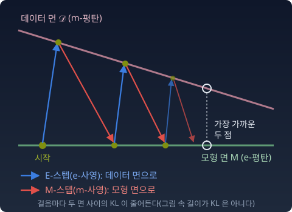

EM: 두 사영의 교대
목적함수 하나를 두 변수에 대해 번갈아 줄인다는 것은 알았다. 그 두 번의 줄이기는 기하학으로 보면 무엇인가? 그리고 왜 값은 한 번도 올라가지 않는가?
이름의 우연에 대하여
EM 알고리즘의 E는 Expectation(기댓값 계산), M은 Maximization(최대화)이다. 정보기하학의 e-사영은 exponential, m-사영은 mixture에서 온 이름이다. 이니셜이 같은 것은 우연이다.
그런데 E-스텝이 e-사영이고 M-스텝이 m-사영이라는 대응은 우연이 아니다. 뎀프스터, 레어드, 루빈이 "기댓값을 계산하고 최대화한다"고 이름 붙인 절차를, 그 뒤 기하학 쪽에서 KL의 교대 최소화로, 다시 e-사영과 m-사영의 교대(em 알고리즘)로 읽어 냈다. 두 그림이 정확히 겹치는 것은 완전데이터 모형이 지수족일 때다. 그때 M-스텝이 기대 충분통계량(책임도로 가중해 낸 충분통계량의 평균)을 맞추는 m-사영이 된다. 일반 모형에서는 EM과 em이 어긋날 수 있다.
| EM 알고리즘 | 정보기하학 | 착지하는 면 | |
|---|---|---|---|
| E | Expectation (기댓값 계산) | e-사영: 𝓛(·, θ)를 q에 대해 최소화 | 데이터 면 D (m-평탄) |
| M | Maximization (최대화) | m-사영: 𝓛(q, ·)를 θ에 대해 최소화 | 모형 면 M (e-평탄) |
사영의 이름과 착지하는 면의 평탄함이 엇갈린다는 것을 눈여겨보자. e-사영은 m-평탄한 면에 내려앉고, m-사영은 e-평탄한 면에 내려앉는다. 피타고라스가 성립하는 짝이 바로 이 엇갈린 짝이다.

왜 값이 내려가기만 하는가
k번째 사이클을 두 스텝으로 쓴다.
첫 부등호는 E-스텝이다. θ를 두고 q를 최선으로 바꿨으니 값이 올라갈 수 없다. 둘째 부등호는 M-스텝이다. q를 두고 θ를 최선으로 바꿨으니 역시 올라갈 수 없다.
이것이 단조감소의 이유 전부다. 직교도, 곡률도 필요 없다. "한 변수씩 최소화한다"는 사실 하나면 된다. 좌표 하강법(여러 변수 가운데 하나씩 돌아가며 그 변수만 가장 좋게 고치는 방법)과 같은 논리다.
피타고라스가 재는 것
그러면 기하학은 무엇을 더하는가. 감소량을 정확히 잰다.
M-스텝의 감소량은, 모형 면 위의 피타고라스(p 자리에 qk+1)에서 나온다.
새 모형과 옛 모형 사이의 KL이다.
E-스텝의 감소량은, 데이터 면 위의 쌍대 피타고라스에서 나온다.
그리고 이 값은 E-스텝 직전의 ELBO 갭과 같다. E-스텝은 갭을 닫는다.
피타고라스는 수렴의 원인이 아니다. 수렴하는 동안 매 걸음의 보폭을 잴 수 있게 해 주는 자다. 아래 파이썬에서 두 감소량이 두 KL과 소수 다섯째 자리까지 같다.
넓히기와 좁히기
섞기(OR, 이것 아니면 저것)는 가능성을 넓히고, 곱하기(AND, 이것이면서 저것)는 좁힌다. EM에도 넓히고 좁히는 리듬이 있다. 다만 그 리듬을 e/m의 이름에 억지로 붙이면 헷갈린다. 풀어서 보자.
E-스텝은 보이지 않던 칸을 연다. 관측 x만 있던 세계를 (x, z)의 세계로 넓히고, "이 점이 봉우리 A에서 왔을 확률은 0.7, B는 0.3"이라고 가능성을 열어 둔 채 적어 넣는다. 기하학적으로는 KL(·‖pθ)를 데이터 면 위에서 최소화하는 것, 곧 e-사영이다. 이름은 e-사영인데 하는 일은 "열어 두기"다. 착지하는 면이 혼합으로 닫힌 m-평탄 면이기 때문이다.
M-스텝은 그 열린 칸을 바탕으로 봉우리의 모수를 확정한다. “그렇다면 봉우리 A의 평균은 여기, B의 평균은 저기.” KL(q‖·)를 모형 면 위에서 최소화하는 것, 곧 m-사영이고, 기대 충분통계량(가중 평균, 가중 분산, 가중 비율)을 맞추는 일이다.
지그재그의 오해를 풀자
“넓혔다 좁혔다를 반복하면 제자리 아닌가?” 위 그림의 지그재그만 보면 그렇게 보일 수 있다. 그러나 두 스텝은 서로 다른 변수를 움직인다.
혼합 가우시안을 생각하자. 데이터에 봉우리가 두 개 있다. 모형에도 가우시안 두 개를 놓는다. 처음에는 두 가우시안이 엉뚱한 곳에 놓여 있다.
E-스텝: 각 데이터 포인트가 어떤 봉우리에서 왔을지 책임도(responsibility, 그 점이 그 봉우리에서 왔을 확률)를 계산한다. 아래 파이썬처럼 데이터가 100개면 데이터 100개 × 봉우리 2개 = 200개의 숫자가 생긴다. 한 점의 두 확률은 합이 1이므로 자유롭게 움직이는 것은 100개다. "가능성을 넓힌다"는 것은 이 칸들을 연다는 뜻이다.
M-스텝: 그 책임도를 고정한 채로 각 봉우리의 평균, 분산, 혼합 비중을 갱신한다. 봉우리 A에 소속된 데이터들의 가중 평균 → A의 새 중심. 봉우리 B에 소속된 데이터들의 가중 분산 → B의 새 폭.
매 사이클이 끝나면, 두 봉우리는 데이터의 두 무리에 조금 더 가까이 옮겨져 있다. 적어도 로그우도는 한 번도 내려가지 않는다.
파이썬
봉우리 두 개, 데이터 100개의 혼합 가우시안. 매 사이클에서 E-스텝과 M-스텝이 ELBO를 얼마나 올렸는지 재고, 그 값을 피타고라스가 말하는 두 KL과 나란히 놓는다.
import numpy as np
rng = np.random.default_rng(0)
x = np.concatenate([rng.normal(-2, 1, 60), rng.normal(3, 0.7, 40)]) # 데이터 100개
def logN(x, mu, s):
return -0.5 * ((x - mu) / s)**2 - np.log(s * np.sqrt(2 * np.pi))
def joint(w, mu, s): # log p_θ(x_i, z=k), 모양 (100, 2)
return np.log(w) + logN(x[:, None], mu, s)
def loglik(th): # 평균 로그우도 ℓ(θ)
return np.mean(np.logaddexp.reduce(joint(*th), axis=1))
def elbo(g, th): # 평균 ELBO(q, θ), q(z=k|x_i) = g[i, k]
return np.mean(np.sum(g * (joint(*th) - np.log(g)), axis=1))
def e_step(th): # q(z|x) ← p_θ(z|x) (e-사영)
lj = joint(*th)
return np.exp(lj - np.logaddexp.reduce(lj, axis=1, keepdims=True))
def m_step(g): # 기대 충분통계량 맞추기 (m-사영)
Nk = g.sum(0)
mu = (g * x[:, None]).sum(0) / Nk
s = np.sqrt((g * (x[:, None] - mu)**2).sum(0) / Nk)
return Nk / len(x), mu, s
def kl_joint(a, b): # KL(p_a(x,z) ‖ p_b(x,z)), 완전데이터 모형끼리
(wa, ma, sa), (wb, mb, sb) = a, b
kl_n = np.log(sb / sa) + (sa**2 + (ma - mb)**2) / (2 * sb**2) - 0.5
return np.sum(wa * np.log(wa / wb)) + np.sum(wa * kl_n)
th = (np.array([0.5, 0.5]), np.array([0.0, 1.0]), np.array([1.0, 1.0]))
g = e_step(th)
th = m_step(g) # 첫 사이클은 표 밖에서
print(" k ℓ(θ) E-스텝 이득 = 갭 M-스텝 이득 = KL(p_θ'‖p_θ)")
for k in range(1, 6):
gap = loglik(th) - elbo(g, th) # E-스텝 직전의 갭
g_new = e_step(th)
gain_e = elbo(g_new, th) - elbo(g, th)
th_new = m_step(g_new)
gain_m = elbo(g_new, th_new) - elbo(g_new, th)
print(f"{k:2d} {loglik(th):.4f} {gain_e:.5f} {gap:.5f} {gain_m:.5f} {kl_joint(th_new, th):.5f}")
g, th = g_new, th_new
print(f"최종 ℓ = {loglik(th):.4f}, E-스텝 직후 갭 = {loglik(th) - elbo(e_step(th), th):.1e}")
# k ℓ(θ) E-스텝 이득 = 갭 M-스텝 이득 = KL(p_θ'‖p_θ)
# 1 -2.1681 0.06647 0.06647 0.11191 0.11191
# 2 -1.9939 0.06230 0.06230 0.05723 0.05723
# 3 -1.9144 0.02222 0.02222 0.00962 0.00962
# 4 -1.9044 0.00040 0.00040 0.00001 0.00001
# 5 -1.9044 0.00000 0.00000 0.00000 0.00000
# 최종 ℓ = -1.9044, E-스텝 직후 갭 = 0.0e+00
한 사이클의 로그우도 증가는 두 이득의 합이다. 1행에서 2행으로 ℓ이 0.1742 올랐다. 1행의 M-스텝 이득 0.11191과 2행의 갭 0.06230을 더한 값이다.
ML에서: 변분추론 — e-사영을 포기할 때
EM의 E-스텝은 사후분포 pθ(z|x)를 정확히 계산한다. 그래서 E-스텝 직후 ELBO의 갭이 0이 되고, 데이터 면 위의 피타고라스가 감소량을 정확히 잰다.
현실의 많은 모델에서는 사후분포를 정확히 계산할 수 없다. 문서 묶음에서 주제를 찾는 토픽 모형 LDA(Latent Dirichlet Allocation, 블라이·응·조던 2003)가 그런 예다. 문서마다 숨은 주제 비율이 있고, 낱말마다 그 낱말이 어느 주제에서 나왔는지 숨은 번호가 있다. 낱말을 보고 이 둘의 사후분포를 구하려면 두 숨은 변수가 얽힌 합을 풀어야 하는데, 논문은 이것이 정확히는 계산할 수 없다(intractable)고 밝혔다. 그래서 두 숨은 변수 사이의 연결을 끊은, 서로 독립인 분포들의 가족으로 사후분포를 근사했다.
변분추론(variational inference)은 이 상황의 차선책이다. 정확한 사후분포 대신, 다루기 쉬운 가족 𝒬 — 예컨대 “각 변수가 독립인 분포들의 집합”(평균장 근사) — 에서 KL(q‖pθ(z|x))가 가장 작은 q를 찾는다.
정보기하학의 눈으로 보면 차이는 착지하는 면의 모양이다.
| EM | 변분추론 (평균장) | |
|---|---|---|
| E-스텝의 착지 면 | 데이터 면 전체 (m-평탄) | 데이터 면 중 독립인 것들만 (m-평탄이 아님) |
| E-스텝의 사영 | 정확한 e-사영, 답이 하나 | KL(·‖p) 최소화지만 국소해가 여럿일 수 있다 |
| E-스텝의 피타고라스 | 성립 | 깨진다 |
| ELBO의 갭 | E-스텝 직후에만 0 | 일반적으로 0이 되지 않는다 |
평균장 가족은 곱으로 된 분포들이라 e-평탄하다. e-사영의 피타고라스가 필요로 하는 것은 m-평탄한 착지 면인데, 정반대의 평탄함을 가진 면에 내려앉는 셈이다. 그래서 "근사적으로 성립한다"가 아니라 "깨진다"고 말하는 것이 정직하다. 남는 것은 교대 최소화의 단조성뿐이다. ELBO는 여전히 한 스텝씩 오르기만 한다.
그리고 남은 갭 자체가 KL 발산이다. EM의 목적함수를 다룬 절의 식 log pθ(x) − ELBO = KL(q(z|x)‖pθ(z|x)) 그대로다. KL이 여기서도 "근사의 대가"를 재는 자로 쓰인다.
역으로, EM은 변분추론의 특수한 경우다. 𝒬가 충분히 넓어서 정확한 사후분포를 포함하면 E-스텝 직후의 갭이 0이 되고, 변분추론은 EM이 된다.
“변분추론은 EM에서 정확성을 포기하고 실용성을 얻은 것이다. 포기한 것의 정체 — 착지 면의 m-평탄함과 그 위의 피타고라스 — 를 알면, 무엇을 잃고 무엇을 얻는지를 정직하게 볼 수 있다.”
수확
“E-스텝(e-사영, 데이터 면으로)과 M-스텝(m-사영, 모형 면으로)의 교대. 매 스텝이 같은 목적함수를 한 변수씩 최소화하므로 값은 내려가기만 한다. 피타고라스는 그 감소량을 정확히 잰다.”
문제 4. 놀이터의 두 선생님
놀이터 울타리를 따라 아이 넷이 1 m, 3 m, 6 m, 11 m 자리에 서 있다. 선생님 둘이 처음에 0 m와 4 m에 서서 다음 두 일을 번갈아 한다. ① 아이마다 더 가까운 선생님 무리에 든다. ② 선생님마다 자기 무리 아이들의 한가운데(평균 자리)로 옮겨 선다. 아이와 자기 선생님 사이 거리의 제곱을 모두 더한 값을 "흩어짐"이라 하자. (가) ①과 ② 뒤마다 흩어짐을 적어라. 두 일이 더는 아무것도 바꾸지 않을 때까지. (나) 흩어짐이 늘어나는 단계가 있는가? 왜 그런가?
함께 풀기

처음엔 1 m 아이만 0 m 선생님 쪽이고 나머지는 4 m 쪽이에요. 흩어짐 1 + 1 + 4 + 49 = 55. ②로 옮기면 선생님이 1 m와 (3 + 6 + 11)/3 = 6.67 m에 서서 32.67이요.
그런데 ②에서 4 m 선생님이 6.67 m로 가면 3 m 아이는 1 m에서 3.67 m로 멀어지잖아요. 누군가는 멀어지니까 흩어짐이 늘 때도 있을 것 같아요.

②에서 선생님이 고르는 자리는 자기 무리에 대해 무엇이 가장 작아지는 자리예요?

자기 무리 거리 제곱의 합이요. 한 아이는 멀어져도 무리 전체의 합은 그 자리에서 가장 작아요. 그러니 ②는 합을 늘릴 수가 없네요.

①도 같아. 선생님 자리를 그대로 두고 아이마다 더 가까운 쪽을 고르니까, 아이 하나하나의 몫이 늘 수 없어. 다음 ①에서 3 m 아이가 1 m 선생님 쪽으로 옮겨 23.22, ②에서 선생님이 2 m와 8.5 m로 가서 14.50. 그다음 ①에서는 아무도 안 움직여요. 55 → 32.67 → 23.22 → 14.50, 늘어난 적이 없어요.
두 일이 각각 무엇을 고정하고 무엇을 고쳤는지 한 문장으로 말해 볼래요?

①은 선생님 자리를 고정하고 무리 나누기를 가장 좋게, ②는 무리 나누기를 고정하고 선생님 자리를 가장 좋게요. 한 변수씩 최선으로 고치니까 내려가기만 해요. 본문의 E-스텝, M-스텝과 같은 모양이에요.
조 과제에서 역할 나누기랑 일정 짜기를 한 번씩 번갈아 다시 하면, 적어도 지난주보다 나빠지지는 않는 거랑 같네요.
문제 5. E-스텝과 M-스텝 유도
1차원 두 성분 혼합 가우시안 pθ(x) = w₁N(x; μ₁, σ₁²) + w₂N(x; μ₂, σ₂²)에서 (가) E-스텝의 책임도 γ(감마)ik를 쓰라. (나) M-스텝에서 wk, μk, σk의 갱신식을 유도하라. (다) 파이썬 절의 데이터와 초기값에서 첫 M-스텝을 계산하라.
함께 풀기
(가)는 베이즈 정리예요. γik = wkN(xi; μk, σk²) / Σj wjN(xi; μj, σj²).
(나)는 ΣiΣk γik[log wk + log N(xi; μk, σk²)]을 미분해요. wk로 미분하면 Σi γik / wk = 0 이고…

어, 이건 0이 될 수가 없어요. γ가 양수니까 wk를 키울수록 계속 커져요.
wk를 한없이 키우면 그건 아직 확률인가요?
아니요. w₁ + w₂ = 1이 빠졌어요. 라그랑주 승수 λ를 붙이면 Σi γik / wk = λ, 양변을 더하면 λ = N이고, wk = Nk / N이에요. Nk = Σi γik.
제약 없는 극값 문제로 풀면 답이 없는 게 당연하네요. 해석학 시험에서 "구 위에서의 최댓값"을 구하라는데 구 조건을 빼먹고 기울기를 0으로 놓은 거랑 같아요.
μk는 가중 평균, σk²는 가중 분산이요. 짰어요. 첫 M-스텝에서 w = (0.571, 0.429), μ = (−1.719, 2.451), σ = (2.218, 2.255)가 나와요.
파이썬 절의 첫 행과 로그우도를 맞춰 봐요.
파이썬 절은 첫 사이클 뒤 ℓ = −2.1681인데, 제 건 −2.3447이에요. σ가 이상하게 커요.
σ를 계산할 때 x에서 뭘 뺐어요?
초기 μ = (0, 1)이요. 루프 안에서 mu 변수를 갱신하기 전에 sigma를 먼저 계산했어요. 새 μ로 빼면 σ = (1.403, 1.726)이고 ℓ = −2.1681, 맞아요.
옛 μ로 잰 분산은 새 μ로 잰 분산보다 항상 커요. 가중 제곱합은 가중 평균에서 잴 때 가장 작으니까요. 그래서 M-스텝의 "최선"이 아니게 되고, ELBO도 덜 올라가요.
보고서에서 표 1을 고치고 나서 그림 1을 옛 표로 다시 그린 셈이네요. 순서만 틀려도 숫자가 조용히 틀려요.
그러고 보니 놀이터 문제에서 선생님이 자기 무리 한가운데로 옮겨 서던 게 μ 갱신이었네요. 아이를 한 무리에 통째로 넣는 대신 책임도만큼 나눠 넣는 것만 달라요.
문제 6. 독립인 추측만 허락되면
숨은 원인 둘(z₁, z₂, 각각 0 또는 1)을 가진 잠재변수 모형에서, 관측 x를 본 뒤의 사후분포가 다음과 같다. p(z₁=0, z₂=0 | x) = 0.02, p(1, 0 | x) = 0.48, p(0, 1 | x) = 0.48, p(1, 1 | x) = 0.02. 원인은 거의 늘 둘 가운데 하나뿐이다. 변분추론은 이 사후분포를 평균장 가족 q(z₁, z₂) = q₁(z₁)q₂(z₂)로 근사하고, 갭 KL(q‖p(z|x))를 줄인다. q₁(z₁=1) = a, q₂(z₂=1) = b라 하자. (가) 두 주변분포를 그대로 곱한 a = b = 0.5의 갭은 얼마인가? (나) 갭이 가장 작은 (a, b)를 찾아라. 답은 하나인가? (다) 이 가족 안에서 갭을 0으로 만들 수 있는가?
함께 풀기
(가)는 주변분포가 둘 다 (0.5, 0.5)니까 q는 네 칸이 모두 0.25예요. 독립인 분포 중에서 사후분포에 제일 가까운 게 주변분포의 곱이잖아요. 평균을 맞추는 사영이니까요. 그러니 (나)의 답도 (0.5, 0.5)예요. 갭은 0.937이요.
주변분포의 곱이 가장 가깝다는 건 어느 KL로 잰 말이에요? 변분추론이 줄이는 KL은 어느 쪽이 앞 칸이죠?

주변분포의 곱은 KL(p‖q)를 가장 작게 해요. 그건 0.525고요. 변분추론은 q가 앞 칸인 KL(q‖p)를 줄이니까… 다른 문제네요.
그럼 (a, b)를 움직여 볼게. a = 0.6, b = 0.4로 조금만 엇갈려도 갭이 0.937에서 0.913으로 내려가. 계속 따라가면 a = 0.944, b = 0.056에서 0.638이 가장 작아요. 반대로 a = 0.056, b = 0.944도 똑같이 0.638이고요. 답이 둘이에요.
(0.5, 0.5)는 그럼 뭐예요? 거기서 한 걸음 움직이면 어떻게 되죠?

a와 b를 같이 올리면 갭이 커지고, 엇갈리게 움직이면 작아져요. 기울기는 0인데 어떤 방향으론 오르막, 어떤 방향으론 내리막인 안장점이에요. 가운데서 시작하면 거기 멈출 수도 있겠네요.
(다)는 안 돼요. 독립인 분포는 q(0,0)·q(1,1) = q(1,0)·q(0,1)이어야 하는데, 사후분포는 0.02 × 0.02와 0.48 × 0.48로 한참 달라요. 그래서 갭이 0.638 아래로는 안 내려가요.
좋아요. 정확한 E-스텝이었다면 갭은 얼마였을까요?
0이요. 사후분포를 그대로 쓰면 되니까요. 독립이라는 단서 하나 때문에 갭이 0.638 남고, 답도 둘로 갈렸어요. 본문 표의 “답이 하나 / 국소해가 여럿”, "갭 0 / 0이 되지 않는다"가 이 숫자들이었네요.
조교 둘이 서로 상의 없이 각자 채점하면, 둘 중 한 명만 점수를 줘야 하는 문제에서 둘 다 반점을 주거나 한 명이 몰아서 주는 수밖에 없는 거랑 같아요.